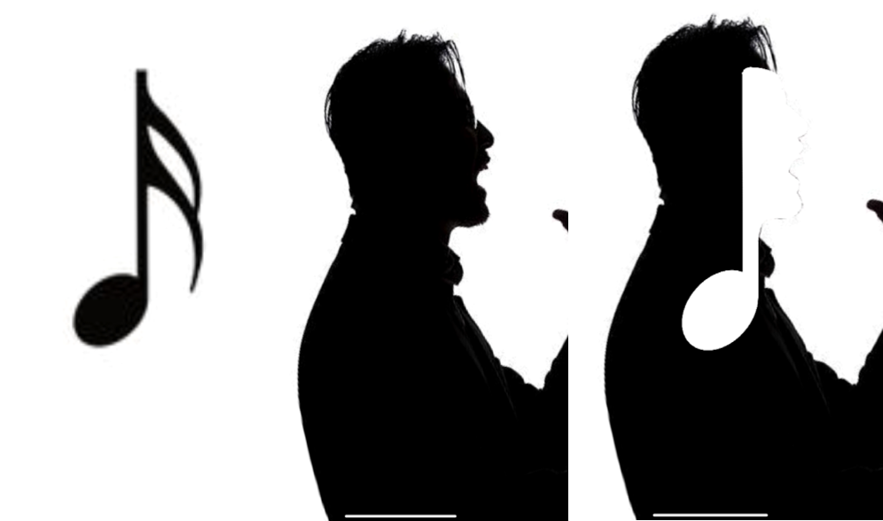

随着线下音乐产业的复苏和大学生素质教育的持续推进，越来越多的校园音乐人和乐队出现，
同时在大学校园的各种活动中对于这些音乐团体的态度也更开放。
但目前整个相关领域的信息整体而言相对闭塞，各个不同的团体之间几乎完全通过私交互相联系，
还未能有效建立起有利于校园音乐发展乃至于最终中国新生代音乐发展的平台和机制。
音乐软件的学生入驻功能
相比于成熟音乐软件学生入驻，“流行乐”更加由线下活动主导，具备大学生的社交圈性质，同时音乐发布是非常次要的功能考虑。
社交软件的推荐算法
由于社交软件不太具备专门性，因此即使使用推荐算法依然缺少信息的整理和发布，也不能够根据特殊功能设计相应的交互形式。
组织演出的主办方
我希望这个平台能够分地区招募演出乐队，需要各个乐队作为整体的风格、演出经历、作品和联系方式。
乐队成员或者独立音乐人
爱好音乐和舞台，可能刚起步，演出信息和报名机会对我来说很重要，
我需要信息的及时、全面，需要明确的报名方式、演出的基本信息或主办方的联系方式。
音乐爱好者
大学生，爱好音乐，刚刚开始音乐之旅，可能希望组织自己的乐队；
我喜欢浏览别人的音乐作品，我希望这是一个广义上的社交平台，
这样我可以和不同音乐风格出身和不同演出经历的人频繁地进行对话。
主界面：
包含招募、动态和我的三个板块，其中招募为默认进入板块。
整体采取深色调的界面设计，考虑到用户上传的视频或图片整体风格多样化并且舞台性较强，
界面设计的色调设计目的是突出和提亮用户发布的内容，并且确保尽量适配用户发布内容的各种风格
左侧三个界面（1~3）依次为主界面的招募、动态和我的界面。在数目较少不会影响用户体验的前提下，
底部标签栏的图标选择轮转式排布，通过圆位移增强交互动感。
同时，这与招募界面中一个招募项目的图片左右滑动和个人主页中展示窗口的图片左右滑动构成交互形式上的呼应。
右侧三个界面（4~6）以招募界面为例展示了一个具体的流程。从招募界面刷到项目后点击进入，
有相关项目的图文介绍，在底部有收藏、转发、退出（不感兴趣）、举手（感兴趣）的四个图标。
当我对项目有意象时，点击举手，可进入聊天界面进一步洽谈。
左侧两图分别是个人主页和乐队主页的情况。
从个人主页可以链接到乐队主页，而乐队主页则会显示乐队成员头像，点击头像即跳转到个人主页。
但个人主页而并非乐队主页是“我的”板块的默认，乐队主页可以由任意乐队成员编辑。